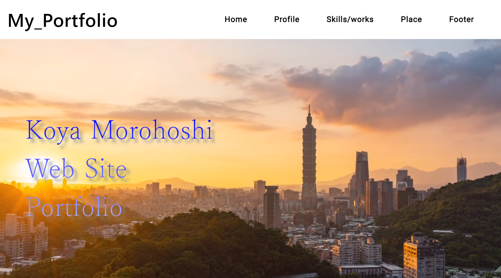
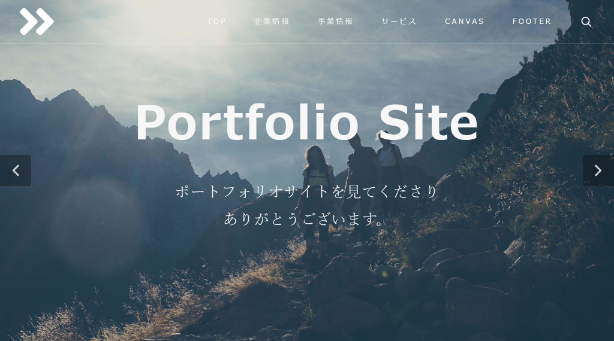
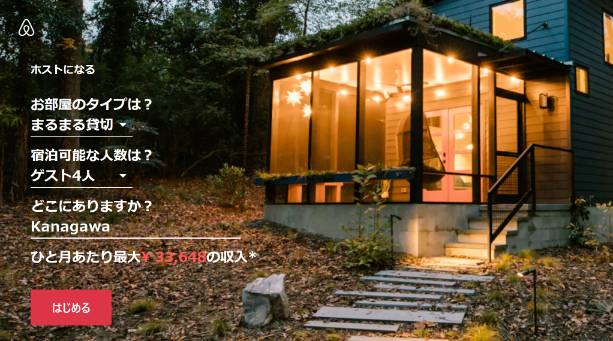

Profile

私について
About me
- 諸星光哉(モロホシコウヤ) / 22歳
2000年1月生まれ、神奈川県出身 - フロントエンドエンジニア
- お客様とのコミュニケーションを第一にし、ご要望に合わせて1つ1つ丁寧に制作いたします。
- またアフィリエイトブログの運営を通してコピーライティングや、SEOについて学習し実践を繰り返しました。
- 特にSEOに関しては書籍やアフィリエイトのプロから学びました。
- その経験をプログラミングでも活かしていけたらと思っています。
- 少しでもお力添えが出来れば幸いです。
可能な業務
Possible Business
- レスポンシブ対応、jQueryを用いた動きのあるのWebサイト制作
- Bootstrap5を用いたサイト構築
- php,MySQLを用いたシステム構築
- Wordpressのフルコーディネート
- WordPress、プラグインに関するアップデート、保守管理
- HTML,WordPressテンプレートを用いた
Webサイト制作、カスタマイズ
Skills/works
スキル
Skills
90%
SEOを意識したコーディング、信頼できるサイト制作を行っていきます。
90%
ユーザビリティ(Webサイトの「使いやすさ」)に配慮し、見やすいデザインを心がけていきます。
90%
「分かりやすさ」「使いやすさ」を重視したWebサイトを素早く制作します。
80%
オリジナルテーマを 1 から作成、SEO対策やプラグインの導入など、Wordpressのあらゆるカスタマイズができます
80%
CSSの拡張機能を使用して、作業効率を上げ、見やすいコード作成をしていきます。
70%
Webサイトで使われるアニメーション・動きをご要望に合わせ実装します。
70%
簡単なWebシステム、データベースを活用したプログラムの作成も行っております。
制作実績
Works
-
 ≫ページトップへ
タイトル：My_Portfolio
使用技術：HTML,CSS,Bootstrap5,jQuery
制作期間：約3週間
今ご覧いただいているサイトになります。
-
 ≫templateサイトへ
タイトル：templateサイト
使用技術：HTML,CSS,
制作期間：約2週間
HTMLテンプレートを使用したポートフォリオになります。HTMLテンプレートごとにカスタマイズも可能です。
サイトはこちらからご覧いただけます。
-
 ≫スクリーンショットはこちら
タイトル：模写コーディング(Airbnb)
使用技術：HTML,CSS,Bootstrap4
制作期間：約1ヵ月
Airbnbのサイトを模写コーディングしました。(2021年3月に作成)
詳細はこちらからご覧いただけます。
Price
価格表
Price
- WordPressサイトの制作
- 100,000円～
- LP制作(1ページ、レスポンシブ対応込み)
- 50,000円～
- トップページのコーディング(レスポンシブ対応込み)
- 20,000円～
- 下層ページ
- 5,000円～
- Wordpress化
- 20,000円～
- サイト修正(1箇所あたり)
- 1,000円～
- HTML,Wordpressテンプレートを用いたWeb制作、カスタマイズ
- 30,000円～※
※Wordpress,HTMLテンプレートは
別料金となります。
Place
活動場所
Place of Activity
Kanagawa ebina-city
神奈川県 海老名市